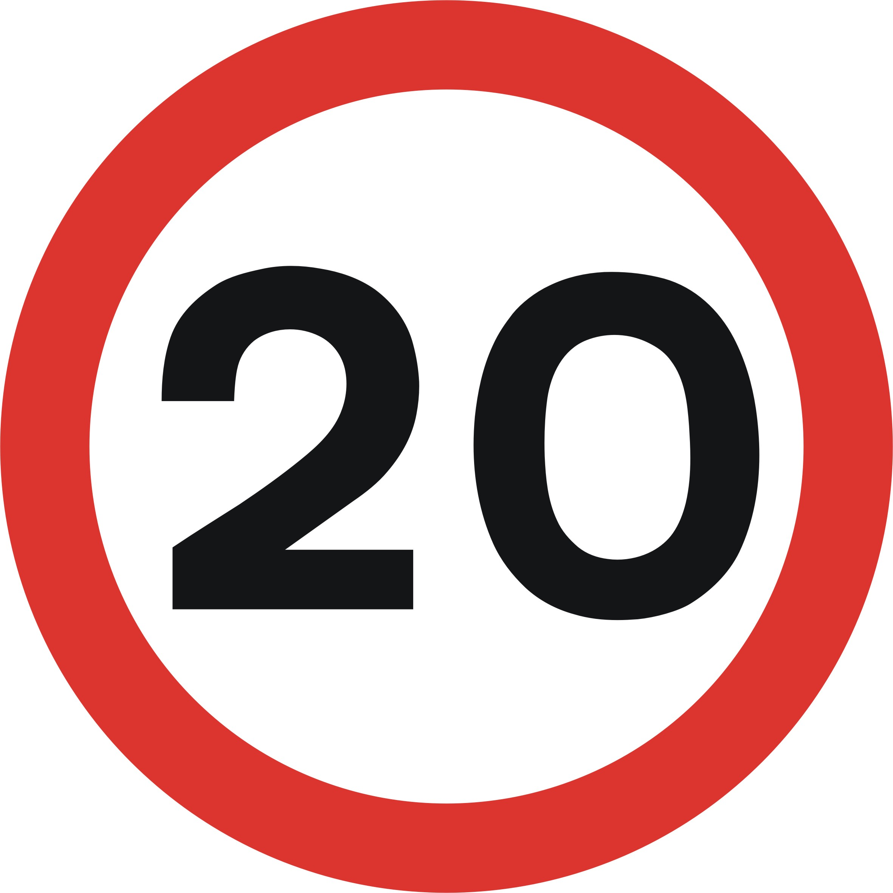
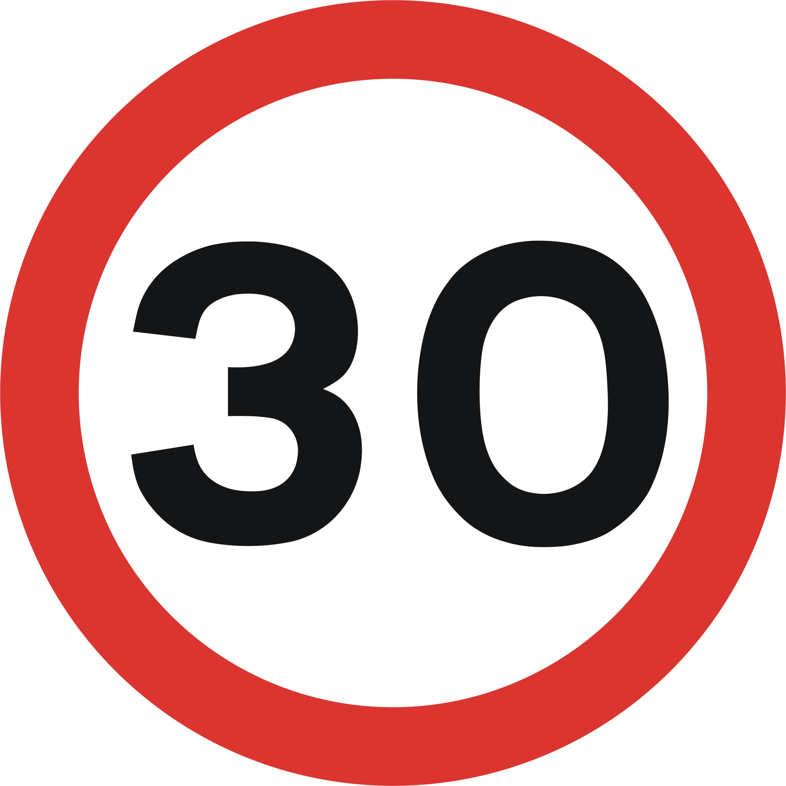

This app contains data collected from the SAM device operated by Burnham Market Parish Council.
Data includes the speed limit applicable in the month, total traffic numbers, the percentage of vehicles travelling at each speed, the percentage within the speed limit and number of vehicles travelling both above the speed limit and also at more than 20mph above the speed limit.
Please note that some months have partial data only due to operational issues.

